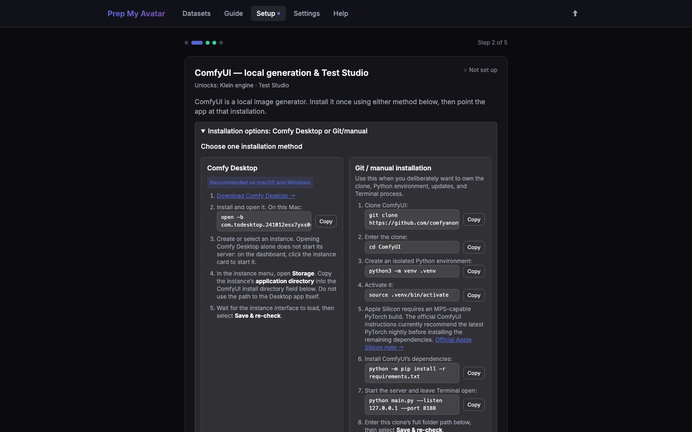

First run · 3 of 21
Step 3: Configure ComfyUI
ComfyUI is the local alternative to the API/cloud providers on the previous page. Generating missing images requires at least one of those choices. ComfyUI also enables the Test Studio; skip it if you chose a remote provider or only want to import and export photos.

Before you begin
Local image generation needs a compatible GPU, a separate ComfyUI installation, and large model downloads. Installing Prep My Avatar does not install ComfyUI automatically.
Choose one installation method
Option A — Comfy Desktop (recommended on macOS and Windows)
- Download Comfy Desktop, install it, and open it.
- Create or select an instance. Comfy Desktop owns that instance’s Python environment, GPU setup, and server process.
- In the instance menu, open Storage. Copy its application directory into Prep My Avatar’s ComfyUI install directory field. Do not enter
/Applications/Comfy Desktop.appor the shared-model directory. - Start the instance. On the verified Mac,
open -b com.todesktop.241012ess7yxs0eopens the dashboard and the instance is named ComfyUI-desktop. - Wait for
http://127.0.0.1:8188, then select Save & re-check.
If the selected folder contains .comfy_environment, it is Desktop-managed. Always start it through Comfy Desktop rather than invoking its private main.py.
Option B — Git/manual installation
Use this route only if you want to maintain the clone and Python environment yourself:
git clone https://github.com/comfyanonymous/ComfyUI
cd ComfyUI
python3 -m venv .venv
source .venv/bin/activate
python -m pip install -r requirements.txt
python main.py --listen 127.0.0.1 --port 8188Leave Terminal open while using ComfyUI. On Apple Silicon, the official ComfyUI instructions currently require an MPS-capable PyTorch build and recommend the latest PyTorch nightly; follow the official Apple Silicon note before installing the remaining requirements. Enter the clone’s full path in ComfyUI install directory, then select Save & re-check.
How Prep My Avatar identifies the installation type
Prep My Avatar does not decide from the folder name. After you save the ComfyUI directory, it resolves that directory (including a nested ComfyUI child in portable layouts) and checks the files inside it:
- A
.comfy_environmentfile identifies an instance managed by ComfyUI Desktop. - Otherwise, a
main.pyfile identifies ComfyUI from Git / code. - If neither marker is present, the installation type is unknown and the page asks you to correct the configured directory instead of inventing a startup command.
On macOS, Prep My Avatar also looks for a Comfy application in /Applications and ~/Applications. It reads the application’s Info.plist to obtain its real name, bundle identifier, and launch command. This application scan helps Prep My Avatar open Comfy Desktop, but it does not classify the configured folder: a user can have Comfy Desktop and a separate Git clone installed at the same time. The .comfy_environment marker is what connects a particular folder to Desktop management.
This is a filesystem heuristic, not a permanent guarantee from ComfyUI. If a future ComfyUI Desktop release stops creating .comfy_environment, a Desktop instance that still contains main.py may be labelled as Git/code until Prep My Avatar’s detection is updated. The configured path and detected type contain no username-specific or machine-specific hardcoding; every installation is checked locally in the same way.
Verified ComfyUI Desktop setup
This working setup was verified on 31 August 2026. Prep My Avatar uses the FLUX.2 Klein 9B fp8 workflow. The 4B files shown in some ComfyUI tutorials are not substitutes for its 9B diffusion model and matching 8B text encoder.
- Desktop instance:
ComfyUI-desktop - API URL:
http://127.0.0.1:8188 - ComfyUI application directory:
/Users/kevinjohngallagher/ComfyUI-Installs/ComfyUI-desktop/ComfyUI - Shared model directory visible to the instance:
/Users/kevinjohngallagher/ComfyUI-Shared/models - Model download root:
/Users/kevinjohngallagher/ComfyUI-Installs/ComfyUI-desktop/ComfyUI/models
Enter the application directory in Prep My Avatar, not the shared-model directory. The installer derives the correct model subdirectories from it.
Klein files and destinations
flux-2-klein-9b-fp8.safetensorsfromblack-forest-labs/FLUX.2-klein-9b-fp8→models/unet/klein/qwen_3_8b_fp8mixed.safetensorsfromComfy-Org/vae-text-encorder-for-flux-klein-9b→models/text_encoders/flux2-vae.safetensorsfromComfy-Org/vae-text-encorder-for-flux-klein-9b→models/vae/Flux2-Klein-9B-consistency-V2.safetensorsfromdx8152/Flux2-Klein-9B-Consistency→models/loras/klein/
The diffusion model, text encoder, and VAE are required. The consistency LoRA is optional but recommended because it helps preserve composition between edits. Allow roughly 19 GB for all four files.
What worked on ComfyUI Desktop
- Open the instance menu and select Storage to confirm the instance's application and model directories.
- Enter the ComfyUI application directory in Prep My Avatar and select Save & re-check.
- Use Prep My Avatar's one-click installers for the public text encoder, VAE, and consistency LoRA.
- For the gated 9B model, accept the Hugging Face licence. This installation downloaded it through the existing authenticated browser session and moved it from Downloads to
models/unet/klein/; no Hugging Face token was created or copied into Prep My Avatar. - Open ComfyUI's Models panel and select Load All Folders. This rescans the model paths without discarding an unsaved workflow.
- Select Save & re-check again in Prep My Avatar.
For a future unattended reinstall, create a read-only Hugging Face token only after accepting the model licence, then save it under Settings → Local tools → Hugging Face token. The one-click gated-model installer can then use it.
Verified file hashes
These SHA-256 hashes confirm the files installed during this setup:
865ba09f5b4c3cbd3468a4bd3acb9fcb2f8740c54317482f0bcd4ed1d3655cee flux-2-klein-9b-fp8.safetensors
abad16806e0cbabc54e0325d6565847443fe396d5f0be38bb3cd3fe75a1201d6 qwen_3_8b_fp8mixed.safetensors
868fe7b343cc8f3a19dbcfcafbc3d5f888802be3f89bd81b65b3621a066ce8f3 flux2-vae.safetensors
61db2017ce420b97bd5ef11984e5a894c90003a6bbf0dc9473f8d7b9ebb3ff93 Flux2-Klein-9B-consistency-V2.safetensorsA tiny HTML or text file with a model filename means an authenticated download failed. Do not rename it or substitute a generic Qwen encoder: incompatible encoders can load but later fail with matrix-shape errors.
Do this
- On Step 2 of 5 — Local generation — ComfyUI, check whether the page says ComfyUI is already running.
- Start it using the matching method above: select the instance in Comfy Desktop, or run
python main.py --listen 127.0.0.1 --port 8188from an activated manual-install environment. - Enter the ComfyUI install directory and ComfyUI API URL shown by your installation.
- Select Save & re-check. A classic ComfyUI directory contains
modelsandmain.py; ComfyUI Desktop uses the supportedmodelsandcustom_nodeslayout instead. - If you want local Klein generation, accept the model licence, add any required Hugging Face token in Settings, and use the offered model, text-encoder, VAE, and consistency-LoRA downloads.
- Select Save & continue →.
The Start this session detail checks for .comfy_environment. For a Desktop-managed installation, it gives the detected Desktop application command and names the instance to select; it does not pretend the folder is a standalone clone. For an ordinary clone, it displays the verified folder command with Copy buttons. If neither launch route can be verified, the page says so instead of inventing a command. Returning from that detail takes you back to Start this session, not to Setup.
To skip this step, leave the fields unchanged and continue. You can return through Setup or Settings → Local tools.
You are finished when
The page reports Klein engine · Test Studio — Ready and Nothing to do here, or you have deliberately skipped local generation. For the verified clean installation, ComfyUI's Model Library shows one entry in each of diffusion_models, loras, vae, and text_encoders. The wizard then shows the local-vision step.